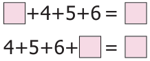
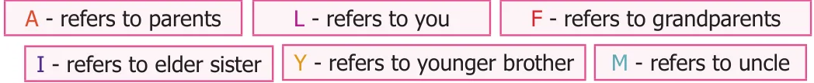
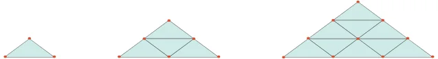

Objective Type Questions
- The next term in the sequence 15, 17, 20, 22, 25,... is
- 28 b) 29 c) 27 d) 26
- What will be the 25 letter in the pattern? ABCAABBCCAAABBBCCC,...
- B b) C c) D d) A
- The difference between 6 term and 5 term in the Fibonacci sequence is
- 6 b) 8 c) 5 d) 3
- The 11 term in the Lucas sequence 1, 3, 4, 7, ... is
- 199 b) 76 c) 123 d) 47
- If the HCF of 26 and 54 is 2, then HCF of 54 and 28 is...
- 26 b) 2 c) 54 d) 1
Exercise 5.2
Miscellaneous Practice problems
- Find HCF of 188 and 230 by Euclid's game.
- Write the numbers from 1 to 50. From that find the following.
- The numbers which are neither divisible by 2 nor 7.
- The prime numbers between 25 and 40.
- All square numbers upto 50.
- Complete the following pattern
- \(1+2+3+4 = 10\) ii) \(1+3+5+7 = 16\) iii) AB, DEF, HIJK, , STUVWX
\(2+3+4+5 = 14 +5+7+9 = 24\) iv) 20, 19, 17, , 10, 5

5+7+9+ 7+9+

- Complete the table by using the following instructions.
A: It is the 6 term in the Fibonacci sequence. B: The predecessor of 2. C: LCM of 2 and 3. D: HCF of 6 and 20 E: The reciprocal of 1/5. F: The opposite number of \(- 7\). G: The first composite number. H: Area of a square of side 3 cm. I: The number of lines of symmetry of an equilateral triangle. After completing the table, what do you observe? Discuss.

- Assign the number for English alphabets as 1 for A, 2 for B upto 26 for Z. Find the meaning of 7 15 15 4 13 15 18 14 9 14 7
- Replace the letter by symbols as + for A, - for B, \(\times\) for C and \(\div\) for D. Find the answer for the pattern 4B3C5A30D2 by doing the given operations.
- Observe the pattern and find the word by hiding the numbers 1H2O3W 4A5R6E 7Y8O9U?
- Arrange the following from the eldest to the youngest. What do you get?

Challenge problems
- Prepare a daily time schedule for evening study at home.
- Observe the geometrical pattern and answer the following questions

- Write down the number of sticks used in each of the iterative pattern.
- Draw the next figure in the pattern also find Candidate's Name the total number sticks used in it.
- Find HCF of 28,35,42 by Euclid's game.
- Follow the given instructions to fill your name in
the OMR sheet.
The name should be written in capital letters G G G G G G G G G G G G G G G G G G G G
from left to right.
One alphabet is to be entered in each box. K K K K K K K K K K K K K K K K K K K K
If any empty boxes are there at the end they M M M M M M M M M M M M M M M M M M M M
should be left blank.
Ball point pen is to be used for shading the Q Q Q Q Q Q Q Q Q Q Q Q Q Q Q Q Q Q Q Q
bubbles for the corresponding alphabets. S S S S S S S S S S S S S S S S S S S S
- Consider the Postal Index Number (PIN) written U U U U U U U U U U U U U U U U U U U U
on the letters as follows:604506; 604516; _{W} _{W} _{W} _{W} _{W} _{W} _{W} _{W} _{W} _{W} _{W} _{W} _{W} _{W} _{W} _{W} _{W} _{W} _{W} _{W}
604560; 604506; 604516; 604516; 604560; _{Y} _{Y} _{Y} _{Y} _{Y} _{Y} _{Y} _{Y} _{Y} _{Y} _{Y} _{Y} _{Y} _{Y} _{Y} _{Y} _{Y} _{Y} _{Y} _{Y}
604516; 604505; 604470; 604515; 604520; 604303; 604509; 604470. How the letters can be sorted as per Postal Index Numbers?